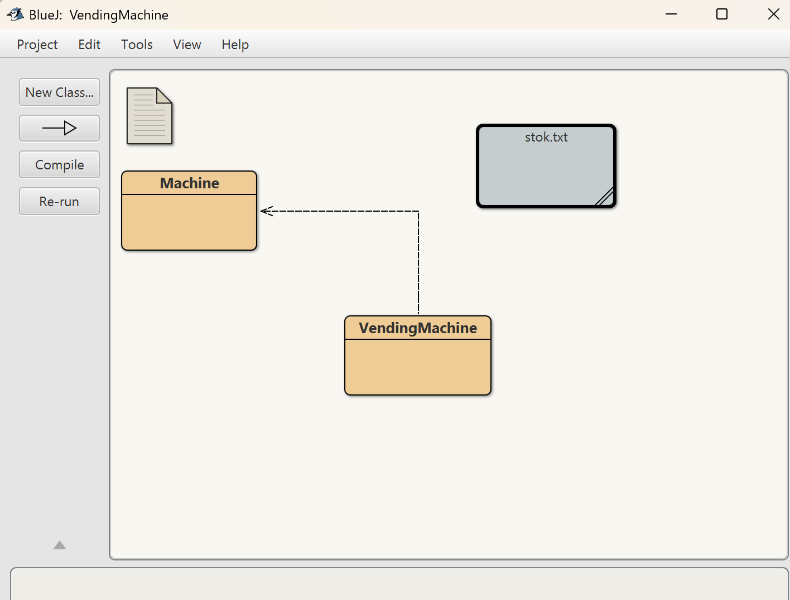
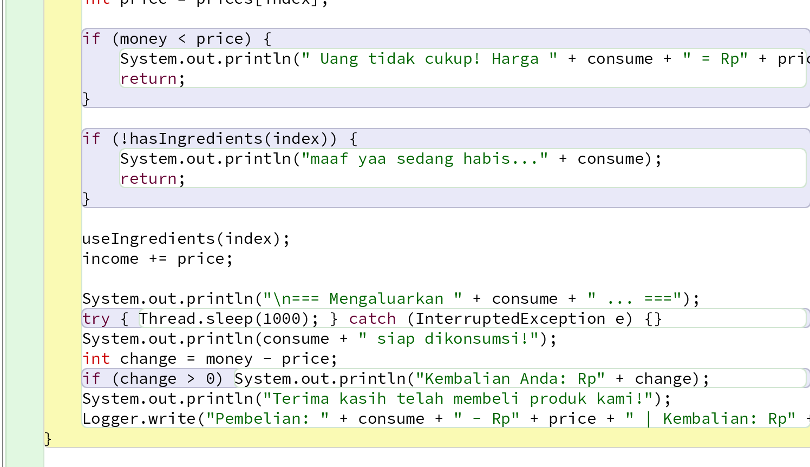

soal ETS PBO kali ini membuat sistem bekerjanya Snack Vending Machine menggunakan bahasa pemrograman java.
pertama-tama saya membuat kode nya di bluej terlebih dahulu. dengan 2 class di dalamnya. dan membuat 1 file txt.
 Alur Sistem (Flow)
Alur kerja Vending Coffee Machine
- Mesin aktif → menampilkan menu pilihan produk.
- Pengguna memilih jenis produk
- Mesin menampilkan total harga.
- Pengguna melakukan pembayaran.
- Mesin memverifikasi pembayaran → jika cukup → mengeluarkan produk 
- Transaksi disimpan ke log.
- Jika stok habis → admin diingatkan untuk refill.


total harga terpampang di menu. karena vending machine bisa beli satu satu.
pembayaran ada dibagian masukkan uang
dari kode dapat dilihat urutan kerjanya.


kode yang saya buat dapat dilihat di.
berikut merupakan video presentasi saya.